Introduzione a SO115Web
Introduzione a SO115Web
SO115Web ha lo scopo di gestire tutte le fasi del soccorso. Dalla registrazione di una chiamata di aiuto alla sua chiusura, dalla selezione di una squadra e del mezzo opportuno , all’uscita della partenza, all’aggiornamento di tutta l’evoluzione del soccorso.
SO115Web
Versione 1.0.0
Home Page
Questa è la pagina principale dell'applicazione, da qui è possibile gestire tutto il soccorso, dalla creazione di una Chiamata, alla composizione di una partenza, dalla gestione delle partenze alla chiusura dell'intervento.
Per accedere alla pagina si passa dal menu laterale e si clicca sull'apposito tasto:
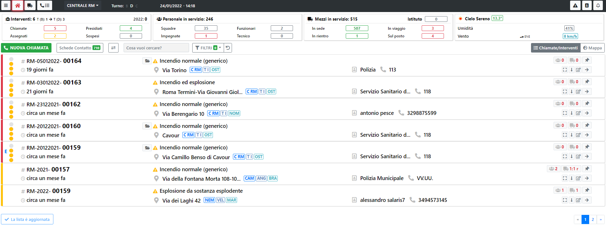
ATTENZIONE
Per poter creare una chiamata è necessario il ruolo di "Gestore Chiamate", per poter accedere alla funzionalità di Composizione Partenza è necessario il ruolo di "Gestore Richiesta".
Navbar
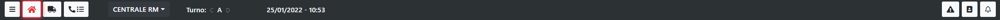
Dalla barra di navigazione è possibile spostarsi tra le diverse funzionalità dell'applicazione, in più è possibile spostarsi tra i diversi comandi, direzioni regionali e visualizzare le informazioni del CON.
Partendo da sinistra, le icone indicano:
- Icona Toast (Le tre righe orizzontali): Aprono il menù laterale dal quale è possibile accedere alle funzioni di settings dell'applicazione
- Icona Home: Consente di tornare all'Home Page
- Icona APS: Consente di accedere alla funzionalità "Mezzi in servizio", dove si trova il riepilogo di tutti i mezzi in servizio nella sede selezionata e il loro stato
- Icona Cornetta: Consente di accedere alla funzionalità "Coda Chiamate", dove si trova il riepilogo di tutte le sedi al disotto dei quella selezionata
- Sede Selezionata: Indica la sede selezionata, premendo sul tasto è possibile spostarsi in altre sedi o selezionarne più di una
- Turno Corrente: Indica il turno corrente
- Data e ora: Indicano la data e l'ora correnti
- Icona Triangolo: Consente di accedere alla funzionalità "Gestione Emergenza", dalla quale è possibile creare e gestire un emergenza
- Icona Rubrica: Consente di accedere alla funzionalità "Rubrica"
- Icona Campanella: Segnala se per la sede selezionata ci sono segnalazioni particolari (Es. Un emergenza creata)
Box
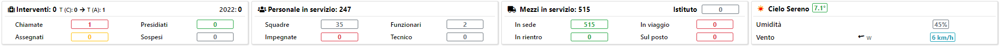
Al di sotto della NavBar ci sono 4 Box che riepilogano la situazione attuale della sede selezionata. I quattro box rappresentano:
- La situazione degli interventi, divisi per: Chiamate, Assegnati, Presidiati, Sospesi
- La situazione del personale, diviso per: Squadre, Funzionari, Impiegate, Tecnico
- La situazione dei mezzi, divisi per: In sede, In viaggio, Sul Posto, In rientro
- Il meteo
Elenco Interventi
Sulla Home Page è presente l'elenco di tutte le chiamate e tutti gli interventi che si stanno svolgendo nella sede selezionata. La lista non ha un ordine casuale, ma presenta per prime le chiamate e a seguire gli interventi. Il loro stato è definito dal colore dell'intervento
Per ogni Chiamata/Intervento sono presenti dei tasti funzione sulla destra.
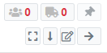
Questi Tasti indicano:
- Il numero di squadre impegnate sull'intervento, se si preme sul numero è possibile vedere le squadre impegnate
- Il numero di mezzi impegnati sull'interventi, se si preme sul numero è possible vedere i mezzi impegnati
- Il tasto per bloccare in alto l'intervento. Questo tasto è utile per bloccare la richiesta che si sta gestendo sempre all'inizio della lista.
- Il tasto quadrato: Questo tasto apre la maschera delle azioni possibili sull'intervento.
- Il tasto freccia in basso: Apre il dettaglio della chiamata/intervento
- Il tasto modifica: Consente di modificare le informazioni dell'intervento
- Il tasto freccia a destra: Apre la Composizione Partenza
Dettaglio Intervento Tramite il tasto "freccia in basso" è possibile aprire il dettaglio dell'intervento. Da questo dettaglio è possibile gestire le eventuali partenze presenti. E' possibile cambiare lo stato di una partenza, premendo sullo stato desiderato e indicando la data e l'ora nella quale, la partenza, ha assunto lo stato selezionato. E' anche possibile vedere i componenti di una squadra tramite il tasto lente a destra delle squadre.
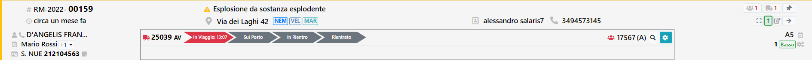
Azioni
Premendo il tasto quadrato presente a destra di ogni intervento si apre una modale con le azioni possibili.
Azioni Chiamata
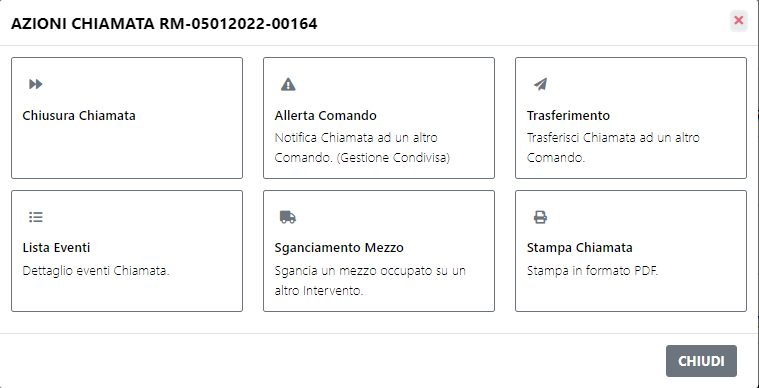
Se si seleziona una chiamata le azioni possibili saranno:
- Chiudere la chiamata
- Allertare un altro comando: Consente al comando allertato di poter inviare partenze sull'intervento, oltre alle partenze della sede principale
- Trasferimento: Consente il trasferimento della chiamata ad altro comando, a differenza dell'allerta, la gestione dell'intervento passa interamente al comando di destinazione
- Lista Eventi: Presenta l'elenco di tutti gli eventi che sono stati generati sull'intervento selezionato, in più presenta una sezione chiamata "LogBook" dove l'operatore può inserire dei propri appunti
- Sganciamento Mezzo: Da qui è possibile sganciare un mezzo da un altro intervento e farlo interventire sull'intervento selezionato
- Stampa Chiamata: Consente di stampare il dettaglio della chiamata
Azioni Intervento
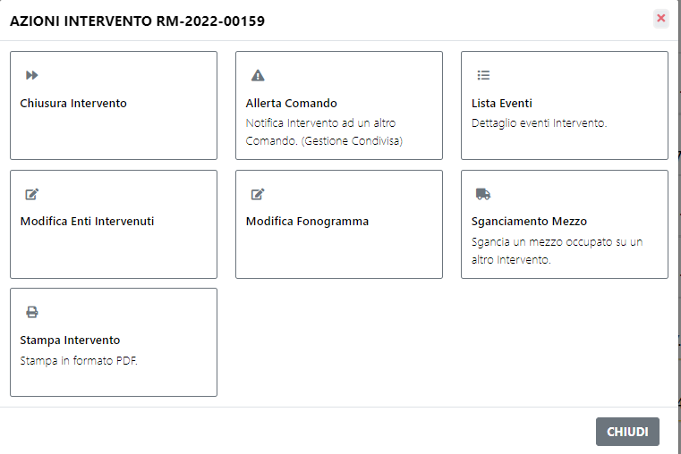
Se si seleziona un intervento le azioni possibili sono simili a quelle di una chiamata, ma non sarà possibile trasferire l'intervento ad altro comando. In più è possibile:
- Aggiungere un ente intervenuto sull'intervento
- Aggiungere un fonogramma
Filtri
Al di sotto dei Box riepilogo sono presenti i filtri che interagiscono con la lista delle Chiamate/Interventi
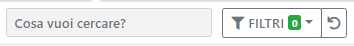
Tramite la ricerca testuale è possibile ricercare un qualsiasi testo all'interno di tutte le richieste. Dal nome del richiedente, alla targa di un mezzo, al nome di una squadra
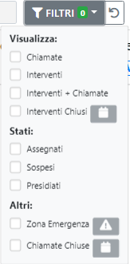
Tramite i filtri invece è possibile:
- Visualizzare solo le Chiamate
- Visualizzare solo gli Interventi
- Visualizzare sia Chiamate che Interventi
- Visualizzare gli interventi Chiusi indicando un lasso di tempo
- Visualizzare gli interventi che hanno un determinato stato: Assegnato, Sospeso o Presidiato
- Visualizzare le Chiamate Chiuse
Nuova Chiamata
Gestione Utenti
Gestione degli utenti dell'applicativo, e dei loro ruoli.
Per accedere alla pagina si passa dal menu laterale e si clicca sull'apposito tasto:
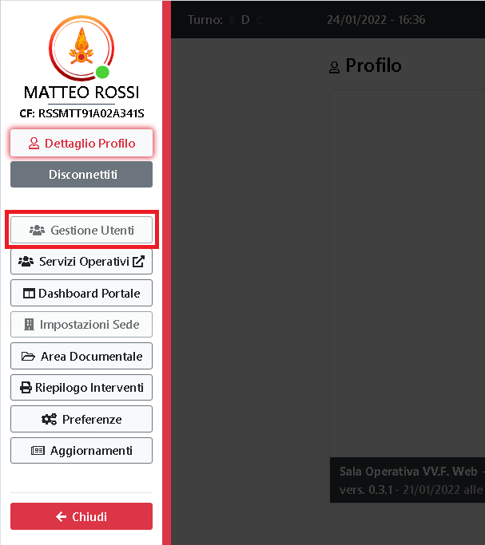
ATTENZIONE
Per accedere alla pagina e gestire gli utenti, è necessario il ruolo di amministratore.
Lista Utenti
In questa sezione vengono mostrati tutti gli utenti del sistema
E' possibile ricercare gli utenti per Sede o per Nome/Cognome tramite gli appositi filtri in alto a destra.
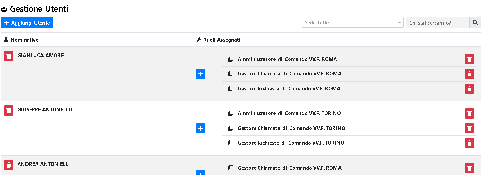
Modifica Utente
Nuovo Utente
E' possibile creare un nuovo utente tramite l'apposito tasto.
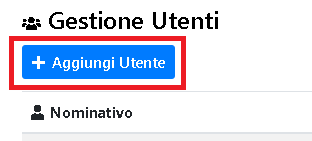
Si aprirà in seguito il pannello con i dati da inserire del nuovo utente.
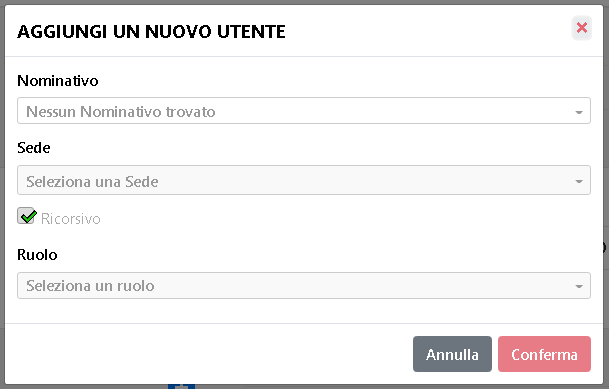
Tra i dati da inserire, vanno specificati il nominativo, la sede a cui l'utente fa riferimento, il fatto se sia ricorsivo* o meno, e il ruolo che ha per la sede specificata
Il flag 'Ricorsivo', significa che l'utente assume il ruolo selezionato anche sui comandi o distaccamenti che fanno riferimento alla sede principale selezionata. (e.g. se assegno la sede Comando di Roma all'utente, e spunto il flag Ricorsivo, in automatico l'utente avrà lo stesso ruolo anche sui distaccamenti figli come Ladispoli o Anzio)
Elimina Utente
E' possibile eliminare un utente esistente tramite l'apposito tasto.
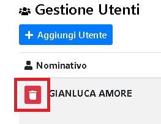
Ed in seguito confermare la scelta.
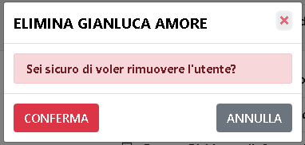
Aggiunta di un ruolo
E' possibile aggiungere un ruolo ad un utente esistente tramite l'apposito tasto.
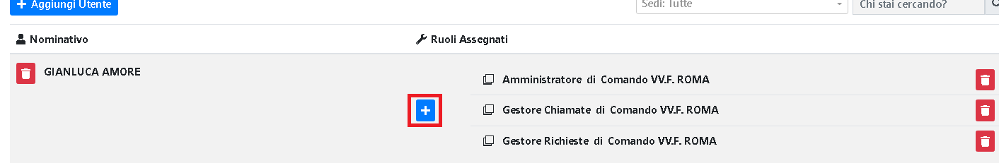
Ed in seguito specificare gli stessi campi presenti anche in fase di "Nuovo Utente"
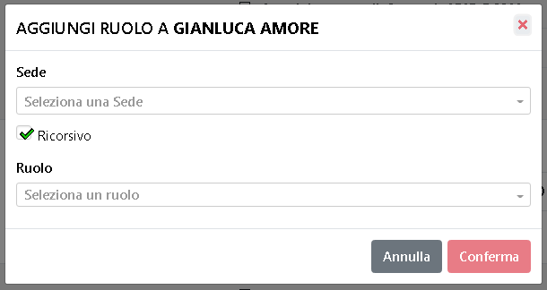
Cancellazione di un ruolo
E' possibile eliminare un ruolo ad un utente esistente tramite l'apposito tasto.
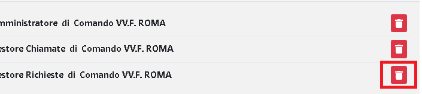
Ed in seguito confermare la scelta.
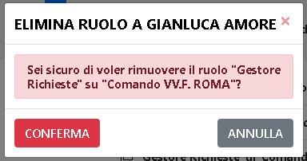